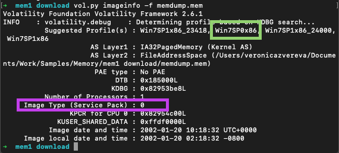

SANS Six-Part Methodology
Used to identify malicious processses:
- Identify rogue processes
- Analyze DLLs and handles
- Review network artifacts
- Look for code injection
- Check for any signs of a rootkit
- Dump suspicious process and drivers
RAM Collection
Memory is the best evidence, although the hardest to preserve. If you recall Frozen II “Water has memory”. The same is with this. Even if you delete all the evidence, memory is silently remembering all that. But it’s so fragile….

In general, things we are going to do are specific to the case type. It case of a malware infection we will be looking for rogue processes, rootkits and other such things, while in child exploitation or insider threat - these are not top priority. In case of child exploitation we would be more interested in some png or jpeg still residing somewhere in memory.
User Activity –> File usage and knowledge. Proove someone did something or used something. Common artifacts: Prefetch, Shimcache, Web browser, $MFT (master file table).
Encryption –> Key files and passwords. Common tools: hashcat, passware.
Host compromise –> Processes, network activity, malware, rootkits, persistence.
Benchmark the tools. DumpIt - lightweight, Magnet RAM, Belkasoft, FTK (slow, highest footprint), Redline, Fast Dump (fdpro.exe). Media matters. SSD, USB vs Magnetic media evidence disk (HDD)? USB 3 is cool. Storage check at least 1/3 more then the collected. Magnetic cheap, 2-4 Gb.
Other Sources
Hibernation files store the last state of RAM before “falling asleep” 💤 . These files are of a particular value when live acquisition is impossible.
Windows
hiberfil files are not as common, but just as good. imagecopy plugin converts different formats into raw format to speed up. Also saves up to 75% of memory size, therefore decreases the time for analysis. First, determine the OS profile (for vol2) and run the plugin. Example:
vol.py -f hiberfil.sys --profile=Win7SP0x86 imagecopy -O hyber.raw
How to get the correct profile since imageinfo gives you several options and kdbscan gives even more? Below is the output from imageinfo. Purple square shows service pack version and the green one - the correct profile with the correct service pack. Other two suggested profiles have some service packs versions appened to the end.

vol.py -f crash.dmp --profile=Win7SP2x64 imagecopy -O crash2mem.raw
vol.py -f hyberfil.sys --profile=Win7SP2x64 imagecopy -O hibir2mem.raw
Hiberfil.sys. What is hyberfil.sys? Running vol.py imageinfo -f hiberfil.sys, for example, is slow and inefficient. No profiles were sugested. But when we have a live capture of a system, we can use this dump to determine the profile to perfom actions with the right profile on hyberfil.sys.
macOS
Get the hibernation settings - pmset -g | grep hibernatemode:
0– Old style sleep mode, with RAM powered on while sleeping, safe sleep disabled, and super-fast wake.1– Hibernation mode, with RAM contents written to disk, system totally shut down while “sleeping,” and slower wake up, due to reading the contents of RAM off the hard drive.3– The default mode on machines introduced since about fall 2005. RAM is powered on while sleeping, but RAM contents are also written to disk before sleeping. In the event of total power loss, the system enters hibernation mode automatically.5– This is the same as mode1, but it’s for those using secure virtual memory (in System Preferences -> Security).7– This is the same as mode3, but it’s for those using secure virtual memory.
To set the hibernation to the 0 mode - sudo pmset -a hibernatemode 0. To see the file - ls -lh /private/var/vm/sleepimage. On Mac with M1 hibernation was enabled only in 11.3 (see). On Intel MacBook the hibernate file’s location can be retreived with pmset -g | grep hibernate. Default mode - 3.
Analysis
# install brew packet manager
ruby -e "$(curl -fsSL https://raw.githubusercontent.com/Homebrew/install/master/install)" < /dev/null 2> /dev/null
# install volatility (python should be installed)
brew install volatile
# vol.py is now located somewhere here - /usr/local/Cellar/volatility/2.6.1_2/bin/vol.py
# I have made an alias in ~/.zshrc:
# alias vol='python /usr/local/Cellar/volatility/2.6.1_2/bin/vol.py' to run it with just vol
# install rekall
pip install rekall-agent rekall
There are three main tools to perform memory dump analysis: volatility 💦, rekall 🤔 and RedLine 🍎. All of them are free 🚫💴. Unfortunately, rekall project has been recently closed. There also two versions of volatility that coexist at the moment (📆 14/10/2021): vol2 and vol3. The only way I could make vol3 work on Mac - git clone it. I’ve installed vol2 as a standalone tool. brew install and pip install failed to install either correctly. Keep in mind that in vol3 you are no longer running imageinfo. As far as I understand, the profile is not determined automatically ❓.
Below are the formats currently supported:
- raw
- firewire
- EWF (Expert Witness)
- Hibernation files
- Crash dump
- MachO
- Virtual machines (vbox core dumps, vmware .vmss and .vmsn)
- HPAK (FastDump)
- LiME
- QEMU VM memoryy dumps
VMWare and Vbox. Benefit of evidence preservation. ✔️ - needed.vmd can be used and feeded to Autopsy for example.
- vmdk - virtual hard disk
- vmss - suspended state file ✔️
- vmsn - snapshot file ✔️
- vmx - configuration file
- nvram - equivalent to BIOS
There are two types of plugins in volatility: scan (searching and carving from memory) and list (searching for memory structures and pulling info from them). Run vol.py --info | more # list all profiles to list all profiles (⚠️ vol2!). Useful plugins and their applications:
imageinfo. Used to identify the profile for memory image. ⚠️ vol2!
kdbscan. This is similar in that what’s it doing, but it’s much more thorough. Can be used to narrow down the correct profile along with imageinfo. ⚠️ vol2!
Other plugins are described in more details in other sections like Process Collection and Analysis and etc.